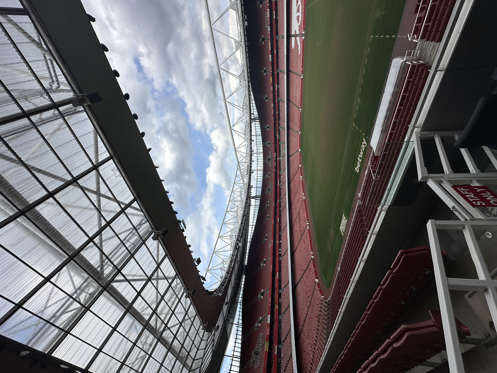
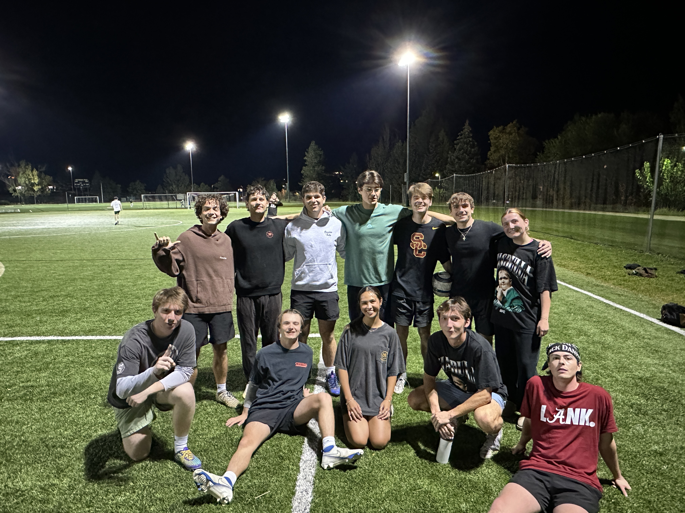
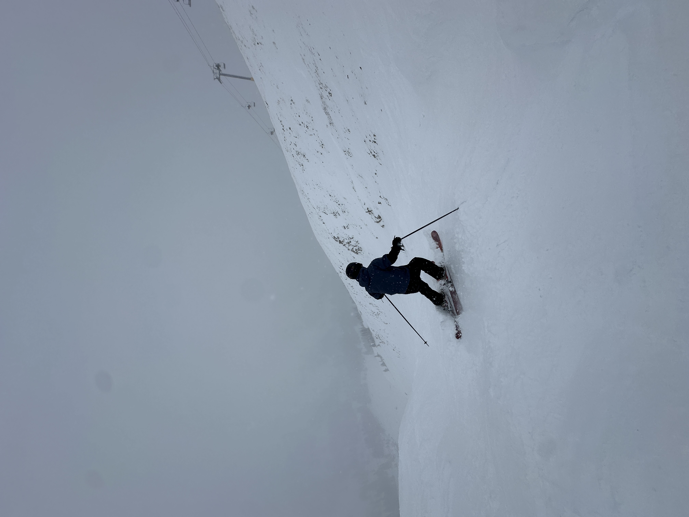

What I do when I'm not at a laptop.
Travel, sport, and a couple of things that have shaped the way I think about design and teamwork more than any class has.
01 · Study Abroad
London, UK · May–June 2025
Defamiliarization — looking at London with fresh eyes
I spent May and June of 2025 in a study abroad program in London. The theme was Defamiliarization — the practice of looking at familiar things from a new angle. A partner and I worked on a long-term project about London football teams during the off-season, researching how fans, pubs, and stadiums keep the buzz alive when no one's playing. We turned our findings into an interactive portfolio site — you can see that one over on Work.

02 · Intramural Soccer
CU Boulder · Fall 2025 & Spring 2026
Organizing a team through senior year
During the fall and spring of my senior year, I joined an intramural soccer team at CU Boulder. I committed to showing up for my team while juggling classes and work, helped organize practices and game strategies, and made a lot of new friends along the way. Honestly one of the most grounding things I've done in college.

03 · Being Outside
Ongoing obsession
Taking advantage of where I live
When I'm not at a screen, I'm usually outside. Skiing in the Rockies, hiking wherever the trail goes, or just finding an excuse to be moving. The outdoors is where I reset and where I do some of my better thinking.
